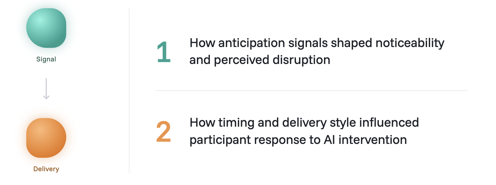

CueTurn
Designing how AI takes the floor in live group conversations.
The Premise
Voice AI is getting better at live conversation, but most systems still follow a familiar pattern: a person speaks, and the AI responds. CueTurn explored a different model:
How should AI intervene in a live group conversation?
That shift makes the interaction much more complex. The system must listen across multiple people, recognize when intervention is actually useful, and step in without breaking the group’s flow. Unlike a human facilitator, AI does not begin with shared social legitimacy. It has to earn trust in the moment while still being clear enough to influence the conversation.
We centered on anticipatory cues to test how they prepare the group for AI intervention, examining:

The Prototype
CueTurn is a research prototype exploring how an AI facilitator can join live group conversations at the right moment, with the right level of visual intensity, without disrupting the group’s flow or sense of agency.
System overview
CueTurn was a working prototype tested in live group discussion sessions. The system included:

Process
Core design explorations focused on anticipation, interpretable differences, and how to evaluate an unfamiliar interaction model in live group settings.
Investigation 1: Anticipation signals
How can AI signal an upcoming intervention without feeling disruptive?
We designed the anticipatory period before the AI spoke as two moments:
- Hold — the AI signals that it intends to speak
- Speak — the AI delivers its intervention
To explore the relationship between noticeability and perceived disruption, we centered on screen occupancy, countdown explicitness, and audio notifications.
Investigation 2: Narrowing the design space
How can we turn a broad design space into differences people can actually perceive?
CueTurn began with many variables: hold states, countdowns, audio cues, visual transitions, and AI representations. Formative sessions showed that some distinctions were too subtle, overlapping, or complex to support clear comparison.
We narrowed the space around perceptible, product-relevant differences. Countdown exploration shifted from visual form, such as ring vs. bar, to explicitness: visible numbers versus a less explicit timer. Later iterations also clarified anticipation as two moments: hold and speak.
This produced a more coherent interaction model and a more interpretable study.
Designing the experimental study
CueTurn was evaluated through formative studies and live user testing with 120 total participants.

The formative co-design study paired a 30-minute group discussion with a 1:1 follow-up interview. That discussion period gave participants enough time to acclimate to an unfamiliar interaction model, reducing novelty effects and making their feedback on design differences more meaningful.
This let us study both live behavior and reflective feedback within the same system.
Wizard-of-Oz Setup
A trained facilitator operated CueTurn behind the scenes, while participants experienced cues as AI-generated.
The system generated candidate cues across social, content, and timing triggers; the wizard selected, edited, and sent them at natural pause points. This allowed us to isolate the intervention experience itself from inconsistencies in cue content or timing!
Key Takeaways!
- Shifted the design focus from isolated UI features to anticipation signal design
- Surfaced timing as a central factor in whether AI interventions felt disruptive or acceptable
- Narrowed a broad design space into more meaningful, testable differences
- Built and tested a working prototype in live group discussions
- Designed the study method used to evaluate this emerging interaction model
Reflection
CueTurn is redefining how I think about product design for AI. Working on it made me much more aware of the behavioral layer of these systems: when they should step in, how strongly they should ask for attention, and what makes their presence feel trustworthy instead of disruptive.
It also pushed me to work across the full arc of a project, from interaction design and study design to live research and synthesis into product decisions. That process is still shaping the kind of designer I want to become.